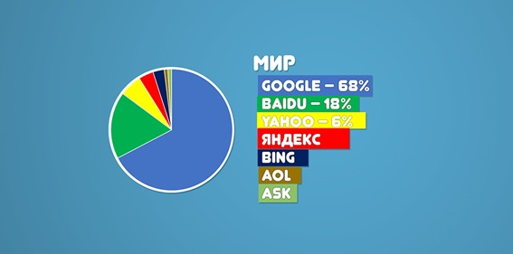

Що таке пошукові системи
Так що таке пошукова система? Сьогодні, це те, звідки ми отримуємо, напевно, 90% інформації про продукти, послуги або бренди. Пошукові системи, це помічники, які економлять нам величезну кількість часу, роблячи за нас чорну роботу по визначенню корисності, правдивості, або якості тієї чи іншої інформації.
Принцип роботи пошукових систем
У пошукових систем, є дві основні функції. Перша - це зібрати інформацію з інтернету і обробити її, помістивши в сховище даних вже в тому вигляді, який буде зручний для пошуку інформації за критеріями. Друга - це видати інформацію користувачеві за запитом, з максимально відповідним вмістом його запиту вигляді. Тобто, що б корисні сайти були зверху, і так по спадаючій.

Для того, щоб зібрати інформацію про сайти, їх контент, пошукові системи засилають своїх роботів, для аналізу сайтів. Якщо Ви вивчаєте статистику відвідувань свого сайту в будь-якому інструменті, наприклад, Google Analytics, то напевно бачили, що Ваш сайт відвідують не тільки реальні користувачі, а й безліч роботів різних сервісів.
Робот, аналізуючи сайт, збирає інформацію про його текстовий контент, зображеннях, медіа файли. Зібравши інформацію і передавши її в сховище даних, пошукова система аналізує ці дані, структурує і визначає релевантність сайту і його сторінок пошуковим запитам. Релевантність сторінок, і відповідно ранжування сайтів по певних запитах, відбувається саме на етапі аналізу даних.
Вводячи пошуковий запит в системі, наприклад, google, Ви отримуєте вже заздалегідь створених список сайтів, ранжируваних відповідно до релевантності Вашого запиту. Періодично, пошукові роботи повертаються на сайти, і перевіряють, чи змінилася інформація на них. Якщо так, інформація знову обробляється, і процес визначення релевантності і ранжування сторінок оновлюється.
Оптимізація сайту – це комплекс методів, www www який зробить сайт не тільки цікавим для користувача, але й зрозумілим та близьким для пошукових систем. Оптимізація сайту – це спосіб “примирення” пошукових систем з сайтом, який змусить пошукові системи “поважати сайт” і вибирати його, пропонуючи йому перші позиції у видачі, коли пошукова система дає відповідь на відповідний запит користувача. Метою пошукової оптимізації є виведення сайту в ТОП – в перші десять відповідей, які розташовуються на першій сторінці видачі. Для того, щоб пошукова система прореагувала на сайт відповідно, потрібно вивчити її алгоритм пошуку та визначити особливо важливі моменти. Тоді, згідно цих моментів, проводимо заходи, які відповідають критеріям заданих пошуковою системою. Оптимізація за кольором Практики вже напрацювали достатньо широкий ряд прийомів, здатних маніпулювати пошуковою системою, однак по своїй коректності, легальності, вони розрізняються. У зв’язку з цим виникло три класи пошукової оптимізації сайтів: чорна сіра біла Чорна оптимізація включає в себе набір прийомів, які характеризуються явною некоректністю, багато з них заборонені, деякі створені для введення пошукової системи в оману. До сірої оптимізації відносяться ті прийоми, які не заборонені, але потенційно є некоректними. У разі, якщо чорна або сіра оптимізація буде виявлена пошуковою системою, до сайту будуть застосовані штрафні санкції чи навіть бан. Біла оптимізація – це легальні професійні методи, що доповнюють один одного і дають стабільний результат. Біла оптимізація спрямована на те, щоб і відвідувачі, і пошукові машини ставили сайту високу оцінку. Внутрішня оптимізація сайту Біла оптимізація заздалегідь припускає, що оптимізатор має справу з корисним сайтом, наповненим унікальним контентом. В цьому випадку пошукова оптимізація поділяється на дві частини: внутрішню і зовнішню. До внутрішньої, перш за все, відноситься робота з мета-тегами (мета-тег Desciption, мета-тег Keywords), чітке структурування сайту, правильне оформлення головної сторінки сайту, карти сайту, навігаційного меню. Особлива увага приділяється роботі з ключовими словами. Вона починається з створення семантичного ядра сайту, формування ключових, розподілу їх по сторінках сайту. Оформлення контенту також повинно виконуватися з урахуванням певних вимог, які впливають на кінцеве ранжування сайту. Ще один важливий момент – це внутрішнє перелінкування сторінок. Вона має свої особливості, які обов’язково повинен враховувати оптимізатор. Детальніше дізнатися про правила внутрішньої оптимізації ви можете тут. Зовнішня оптимізація сайту Зовнішня оптимізація – це, насамперед, збільшення кількісних та якісних показників зовнішніх посилань на ваш сайт. Способи отримання цих посилань різні, та можуть відноситись, як до чорної, сірої та білої оптимізації. Пошукові системи з великою обережністю ставляться до раптового зростання загальної кількості посилань, також до посилань, які розташовані у великій кількості на одному сайті, на сайті з низьким трастом, до посилань, які ймовірно є купленими. Зовнішня оптимізація, проведена з порушеннями, може стати причиною до отримання бану. Оптимізація сайту самостійно Оптимізація сайту самостійно стала можливою завдяки появі таких сервісів як, наприклад, WebEffector. Повністю автоматизований процес в значній мірі полегшує життя власникові веб-ресурсу. Успішна оптимізація сайтів самостійно, тобто, за допомогою автоматичної програми, передбачає добірку оптимальних ключових слів і словосполучень для пошукового просування сайту. Також автоматичний сервіс якісно і недорого здійснює закупівлю посилань на інших веб-ресурсах. Зовсім незайвим для власника сайту, який вирішив зайнятися його оптимізацією самостійно, можуть стати аналіз якості контенту і пошуковий аудит сайту – корисні послуги від автоматичних сервісів. Оптимізація – це динамічне поняття Пошукова оптимізація сайту – не застигла комбінація. Вона орієнтована на алгоритми пошукових систем, а ці алгоритми часто змінюються для того, щоб протидіяти методам чорної оптимізації. Разом з оновленням алгоритмів додаються нові фактори пошукової оптимізації, уточнюються старі. Читати більше на - igroup.com.ua/seo-articles/optymizatsiya-sajtu/ © Розкрутка сайту, просування сайтів в пошукових системах
Мова піде про два методи, які застосовуються для просування ресурсів в пошукових системах. Чому важливо просувати веб сайт, в багатьох хто ще не має достатньо поняття в сфері веб дизайну виникає таке запитанння, тому що просування сайту забезпечить ресурс на першій сторінці в пошуковій системі, а це в свою чергу кращу присутність відвідувачів на сайті, і збільшить привабливість вашого ресурсу для відвідувачів. Більша кількість відвідувачів, означає більшу кількість клієнтів для вашого проекту. І звісно якщо ресурс знаходиться якомога дальше на сторінках пошукових систем, або взагалі відсутній, то відвідувач навряд чи зможе про нього дізнатись. Звичайно існують різні каталоги в які ви зможите по свої тематиці добавити сайт, але в каталоги мало хто заходить, тому ймовірність того що про ваш ресурс дізнаються низька, можна через соціальні мережі також розкручувати сайт, але всерівно зараз більшість користувачів в інтернет мережі шукають інформацію в пошуковій системі, ввівши запит в полі для пошуку. Для того щоб зрозуміти як просування працює, введіть просто любу коротку фразу в полі для пошуку, в пошуковій – ситемі наприклад google, і ви зразу побачити результат, де будуть показані ті ресурси по введеній фразі, які мають відповідь по вашому питанню. Звісно що більшість клацне на посилання на один з ресурсів які розміщені на першій сторінці, і навряд чи комусь захочиться ще листати по інших сторінках, шукаючи інформацію. Отож не достатньо мати в наявності легкий для завантаження, і красивий дизайн сайту, потрібно зрозуміти, що для сайта потрібно крім цього ще й забезпечити топове місце в мережі. Для цього існують два методи просування веб сайтів, “White hat” і “Black hat”. Метод “White hat” (англ Біла шапка ) — метод, в якій входить більшість технологій які вважаються “законними”, для просування веб сайтів в пошукових системах. Вони схилаються основним чином на оптимізації структур сторінки, які містяться на веб сайті, для коректної інтерпритації і оцінки алгоритмів присвоєння рейтингів, які використовують пошукові системи. Прикладом технології “White hat” може служити система “frendly url’s” (ситема побудови дружніх адресів). Оптимізація “On page” — звязана з змінами і доповненнями, зробленими безпосередньо в ісходному коді, який міститься на сторінці. оптимізація функціональності веб сайту — сторінка повинна функціонувати в любому браузері, і повинна задовільняти різні вимоги користувачів, і код html повинен бути дійсним. оптимізація ключових слів — ключові слова повинні стратегічно міститись в тексті і метатегах коду, але необхідно все таки не зловживати ними. оптимізація метатегів — ці елементи можуть визначити характеристики сторінок, як наприклад: опис і інформація про автора сторінки, специфічні ключові слова, мову на котрій написаний текст, тип сторінки і т.д. оптимізація заголовку сторінки — можна ввести ключові слова і заголовок сторінки з ціллю оптимізації представленої сторінки в пошукових системах. оптимізація текста і вмісту сайта — стосується бажаних ключових слів шляхом додавання їх в метатеги. Ключові слова, які введені в цей тег, повинні знаходитись в частині представленого тексту і вмісту сторінок веб сайту, оскільки часте повторення, примусовий і агресивний вміст і ключові слова безпосередньо в сайті можуть характеризувати даний сайт як спам. оптимізація посилань — вони також можуть бути оптимізовані, таким чином щоб давати хороші результати під час роботи пошукових систем. Оптимізація “Off Page” — відноситься до дій, які здійснюються не через веб сайт а поза нього. (слід мати на увазі) кількість сторінок — які ведуть через посилання до оптимізованого веб сайту. характер представлених сторінок — показує що сторінки на яких присутнє посилання на сторінку, яку потрібно оптимізувати, повинна бути з такої ж самої тематики. Page Rank посиланя які ведуть до веб сайту. Чим вищий Page Rank у представлених сторінок і положення в пошукових системах, тим ймовірно, що веб сайт піднімається в топ опис в веб директоріях — індексація допоможе веб сайту володіти більшістю backlinks (зворотніх посилань) і відповідно просує по категоріях представлених директорій. посилання які ведуть до URL — які ми хочимо просунути, бажано повинні містити в якорному тексті ключові слова, які полегшать пошук, по яким можна оптимізувати веб сайт. Метод “Black hat” (“Черна шапка”) — меньш легальний. Його поява обумовлена бажанням власників сайтів бачити створені сторінки в самому верху пошукових систем, не зважаючи на правила гарної поведінки в мережі. “Black hat SEO” відноситься до методів, за допомогою яких пошукові системи “бачать один вміст а користувачі інший“. Називається (cloacking–маскування). Пошуковики приймають санкції, або видаляють із своїх індексів такі сторінки або веб–сайти. Можна досить детально ознайомитись про технології “чорної оптимізації” в “Порадах веб майстру” від Yandex. Пошукова система старається не індексувати або не ранжирувати сайти якщо на сайтах розміщена інформація яка копіюється, або переписується з інших ресурсів, і не створює оригінальний контент. сторінки і сайти, єдиною ціллю яких являється перенаправлення користувачів на інший ресурс автоматичний “редирект” або добровільно. автоматично сгенерований (безсмисленний) текст. сайти з каталогами статтів, програм, підприємств, якщо вони явліються тільки агрегаторами контента, не створюють текстів і описів самостійно і не представляють ніякого унікального сервісу. сторінки з невидими або погановидими текстом сайти які віддають різний контент користувачам і пошуковим роботам (клоакінг) сайти які представляють товар або інформацію по партнерським програмам, і самі по собі не представляють ніякої цінності для користувача. сайти які використовують обманні технології (скрипт, налаштування серверів) які переправляють користувача на сторонні ресурси, і міняють вікно результатів пошуку на сторінки інших ресурсів, при переході із пошукових систем. сайти основним призначенням яких являється агресивна демонстрація рекламних матеріалів. сайти які містять списки пошукових запитів (багаторазове повторення ключових слів), призначені виключно для обману пошукової системи, і маніпулювання результатами її роботи, в тому числі використання елементів сторінок, які приховують ключові слова, наприклад скролінгом або інших технічних прийомів. групи сайтів одного власника, які представляють користувачу одні і ті самі товари і послуги, які створенні з ціллю заповнення декілька позицій в результатх пошуку. немодеруємі форуми, дошки обяв, які містять велику кількість спамових посилань сайти які встановлюють зовнішні посилання виключно для обману пошукових систем і “накручуванню” релевантності і не являються рекомендацією автора відвідати ресурс. сайти або група сайтів які інтенсивно посилаються одна на одну (лінкфарми) сторінки сайту з результатами пошуку З чого можна зробити висновок що потрібно уникати перш за все спамових посилань, звідки вони можуть зявитись на ресурсі, перш за все це в коментарях які можуть залишати відвідувачі, вони можуть містити спамові посилання. Тому варто видаляти такі коменти, а також з обережністю відноситись до коментарів, які не мають толкового змісту. Як за звичай вони можуть містити спамові посилання в тексті, як уникнути таких коментарів, встановити спеціальні плагіни які блокують спамові повіомлення, їх достатньо в мережі, або перевірити адресу чи сайт на спам, також присутньо багато ресурсів які виконають дане завдання безкоштовно. Поняття пошукового спаму, включає спроби обману пошукової системи, і маніпулювання її результатами з ціллю підвищення позицій сайту в пошукових системах. Сайти які містять “пошуковий спам“, можуть бути понижені при ранжинуванні, або виключені із списку неможливості їх коректного ранжинування. І перед закінченням публікації вирішив повернутись до маркетингу, а саме яку роль відіграє маркетинг у просування сайту. Візьмем для прикладу два типи off-line і on-line. Для off-line в якості прикладу можна взяти фруктовий магазин на ринку, для on-line віртуальний магазин, обидва спецалізуються на продажі, скажем фруктів. Основне завдання продавця фруктового магазину на ринку це розташувати точку в місці з інтенсивним рухом. І для того щоб привабити велику кількість покупців, потрібно застосувати напис плакат з якоюсь оригінальною або звичайною назвою. Наприклад просто “Фрукти (яблуки, груші, банани — імпортні і т.д)“, або щоб плакат получився більш замітним додати якусь оригінальну–прикольну назву “Черешня без мяса” 🙂 . Як тільки такий текст зявиться перед торговою точкою, потенціальні клієнти будуть мати кращу можливість звернути увагу на товар. В інтерет середовищі таке завдання вирішити значно складніше, так як в першу чергу необхідно створити веб–сайт, і якомога більш привабливий для користувачів, з красивим вмістом, зображеннями типу фруктів. Необхідно створити сторінки з продукцією, заголовками, описом, командними кнопками і спеціальними додатками. Потім оптимізувати такий сайт (зрозуміло що мова йде про інтернет магазин) по визначеним ключовим словам, звісно додати хороші відгуки, наприклад число вмісту калорій в фруктах, відеоматеріали, блоги а в них статті про важливість фруктів в раціоні харчування. І в ринковому магазині і в віртуальному ми можемо зробити все потрібне, але результат в віртуальному можна буде побачити тільки з часом і можливо в далекій перспективі на відміну від ринкового фруктового магазину. Інтерет магазини завжди детально представляють назву і опис продукції, зображення. Іх слід розміщувати там де форма, колір, дизайн, можуть мати важливе значення для клієнта. Наприклад купуючи CD клієнти завжди оцінять презентацію фрагментів пісень в MP-3 . Або ігри, їх презентацію можна створити в форматі AVI. В книжкових інтернет магазинах потрібен не тільки опис книг а також слід включити резюме, ліцензії, і відгуки тих хто читав дану книгу, позитивні відгуки можуть позитивно вплинути на іншиш потенційних клієнтів.
*ВЕБ-СТУДІЯ «ІДЕЙНЕ РІШЕННЯ» РОЗРОБКА ТА СУПРОВІД ПРОЕКТІВ